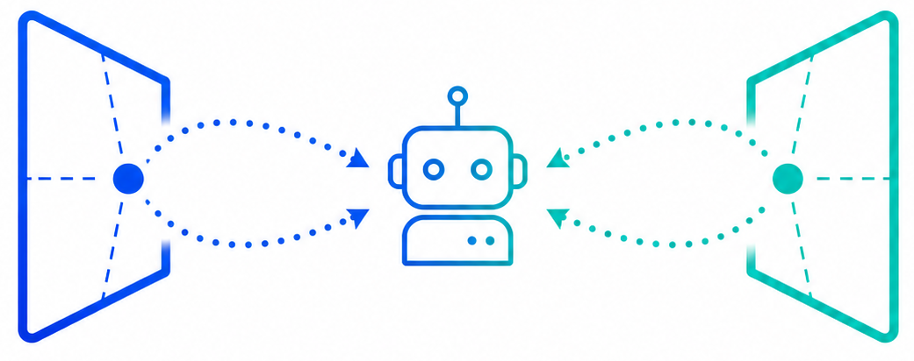

Drift-Resistant Navigation World Model with Anchored Epipolar Guidance
A navigation world model that uses sparse future anchors and bidirectional epipolar guidance to reduce perceptual and geometric drift during long-horizon rollouts.
VITA, EPFL
Abstract
We propose Drift-Resistant Navigation World Model, a generative model for long-horizon navigation prediction that mitigates both perceptual drift and geometric drift. Existing rollout-based world models recursively feed generated frames into later predictions, causing visual errors to accumulate, while their futures can also deviate from the agent's intended motion. DR-NWM reframes prediction as anchor-guided rollout: it first predicts sparse future anchors, then generates intermediate frames conditioned on both the past context and future anchor. These anchors also support bidirectional epipolar guidance, giving the model geometric cues without requiring explicit 3D supervision. Across navigation benchmarks, this produces future observations that remain more stable over long horizons and more faithful to the geometry induced by the action sequence.